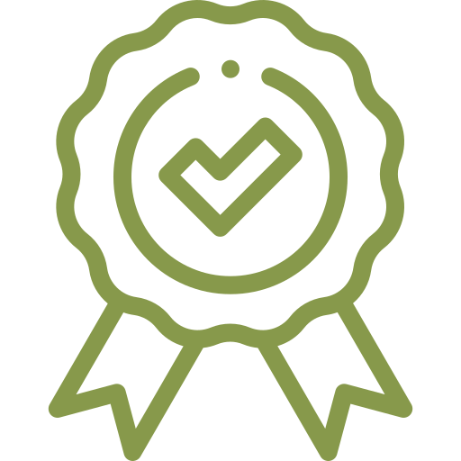
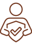
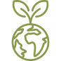

Início
InícioAjudando a produzir o melhor café, para sua empresa.
Sobre nós
Nossa missão é transformar a forma que a plantação de café é monitorada, visando uma melhora na produção e na qualidade da colheita do grão de café
Serviços que disponibilizamos especialmente pra sua empresa.
Produtividade
Aumento na qualidade e na produtividade da colheita do grão de café, gerando um aumento na colheita de sacas por ano.
Segurança
Trazemos segurança para sua colheita, otimizamos a forma como você visualizas condições climáticas que afetam a colheita.
Sustentabilidade
Não agredimos sua plantação, na verdade, utilizamos sensores para preservar a forma e a frequência com que ocorrerão as colheitas.
